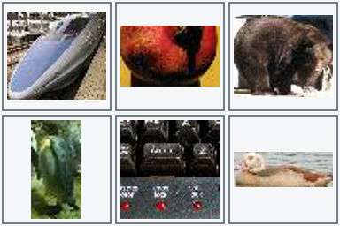
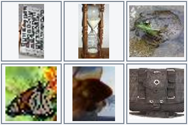
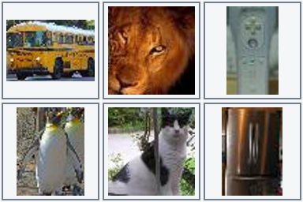

사진 여섯 장과 자연어 조건으로 decision model 학습하기
앞선 두 MNIST 실험에서는 손글씨 숫자와 지시를 보고 정해진 선택지 중 하나를 고르는 모델을 만들어 봤다. 첫 번째 MNIST decision model 실험에서 출발해, 세 숫자와 자연어 지시를 다루는 실험으로 확장했다. 이번에는 숫자 대신 다양한 실제 사진을 놓고, 위치와 사물의 종류, 개수까지 함께 따져야 하는 조금 더 어려운 문제로 나아가 보자.
사진을 보고 질문에 답하는 일이라면 이미 시각언어모델(VLM)이 잘한다. VLM은 이미지와 문장을 함께 읽도록 학습한 모델이다. 그런데 답을 다른 프로그램의 행동으로 바로 쓰고 싶다면 어떨까? 예를 들어 사진 여섯 장 중 하나를 고른 결과를 로봇이나 화면 조작 프로그램에 넘긴다고 해 보자. 매번 긴 답변을 생성하고 그 문장에서 위치를 찾아내기보다, 모델이 정해진 선택지에 점수를 주고 위치와 확률을 바로 돌려주면 다루기 편하다.
이런 방식을 decision model이라고 부른다. 이번에 만드는 모델은 문장을 토큰이라는 작은 단위로 이어 쓰는 대신 한 번에 선택지의 점수를 계산하므로, 특히 긴 답변을 생성하는 방식보다 지연시간을 줄일 가능성도 있다. 이미 사진과 언어를 배운 VLM을 바탕으로 삼으면, 우리가 새로 만든 판단 문제는 얼마나 적은 데이터와 학습으로 익힐 수 있을까?
이번 글에서는 Qwen3.5-4B에 선택용 head를 붙여 사진 여섯 장을 고르는 문제를 만들어 본다. 먼저 학습한 모델을 새로운 사진과 다양한 지시로 시험하고, 어려웠던 유형을 데이터로 보완해 같은 문제를 다시 풀려 본다. 마지막에는 생성형 Qwen과 같은 문제의 정확도와 속도를 직접 비교해 보자. 코드와 가중치, 실험 자료 안내를 함께 공개한다.
1. 풀고 싶은 문제
사진 한 장을 보고 “고양이”라고 말하는 것과, 여러 사진을 보고 “고양이 왼쪽 아래를 골라”라는 지시를 따르는 것은 다르다. 뒤의 문제에는 사물을 알아보는 일과 위치를 따라가는 일이 함께 들어 있다. 우선 사진 여섯 장을 두 줄로 놓고 시작해 보자.

실제 모델에 들어간 사진판이다. 윗줄을 왼쪽부터 A·B·C, 아랫줄을 D·E·F라고 부르자. 아래 표는 각 칸의 중심 대상을 읽기 편하게 적은 것이다.
| 왼쪽 | 가운데 | 오른쪽 | |
|---|---|---|---|
| 윗줄 | A: 개 | B: 바나나 | C: 고양이 |
| 아랫줄 | D: 구명보트 | E: 금붕어 | F: 배낭 |
“고양이 사진을 골라”의 답은 C이다. 방향은 사진판을 보는 사람을 기준으로 한다. 예를 들어 B는 A의 오른쪽이고, D는 A의 아래다. “고양이에서 왼쪽으로 한 칸, 그다음 아래로 한 칸 이동해”라고 하면 C → B → E 순서로 따라가야 한다. “동물 사진이 세 장 이상이면 바나나를, 아니면 배낭을 골라”의 답은 B이다. 개, 고양이, 금붕어가 동물에 해당하기 때문이다.
이때 세는 것은 동물이 나온 사진의 수이다. 한 사진에 여러 동물이 있더라도 중심 대상 하나로 표현한다. 격자 밖으로 이동하거나 조건에 맞는 사진이 없으면 NONE을 선택한다. 출력 공간은 A, B, C, D, E, F, NONE의 일곱 가지이다.
2. 기본 모델과 우리가 학습하는 부분
기반 모델로 이미지와 텍스트를 함께 읽을 수 있는 Qwen3.5-4B를 사용했다. 여기에 두 장치를 더했다. LoRA는 기존 모델을 우리 문제에 맞게 조금씩 조정하는 부분이고, 선택용 head는 Qwen이 사진과 지시를 읽고 만든 표현을 받아 A–F와 NONE의 점수를 계산하는 부분이다. 이 실험에서는 Clef 방식을 참고해 head를 만들고 LoRA와 함께 학습했다. 실제 모델 생성 코드와 배포 추론 코드를 공개한다.
예를 들어 B라는 선택지는 “윗줄 가운데 사진을 고른다”는 뜻이다. Head는 질문과 각 선택지에 해당하는 입력 위치를 참고해 선택지별 점수를 낸다. 정보를 모아 선택지를 비교하는 여러 층으로 구성했으며, 내부 폭은 512, routing은 2층, decoder는 4층이다. Head 참조 구현에서 구체적인 연산을 확인할 수 있다.
2×3 사진 격자 + 자연어 지시 + 선택지 정의
↓
Qwen3.5-4B + 학습한 LoRA
↓
학습한 Clef head
↓
A B C D E F NONE 점수
앱에서 사진과 지시를 보내면 점수가 가장 높은 선택지가 답으로 나온다. E가 가장 높다면 프로그램은 응답 문장을 해석할 필요 없이 곧바로 “아랫줄 가운데”라는 결과를 받는다. 이때 각 선택지의 확률도 함께 얻을 수 있다.
이제 모델이 올바른 칸에 높은 점수를 주도록 가르쳐 보자. 필요한 정답은 별도의 규칙 프로그램으로 만들어 둔다.
정답이 E인 문제를 생각해 보자. 일곱 점수를 softmax라는 계산으로 확률로 바꾼 뒤 E의 확률을 살핀다. E에 높은 확률을 주면 손실(loss)이 작고, 낮은 확률을 주면 손실이 커진다. 수식으로는 정답 a의 확률이 p(a)일 때 −log p(a)다. 이 손실을 줄이도록 LoRA와 head를 조금씩 고치는 것이 학습의 핵심이다.
LoRA는 Qwen의 기존 가중치를 그대로 두고, 그 옆에 붙인 작은 행렬을 학습해 필요한 변화를 만든다. 식으로 쓰면 기존 가중치 W에 변화량을 더한 W + (alpha/r)BA다. 여기서 A와 B는 학습하는 행렬이다. rank r은 작은 행렬의 크기를, alpha는 변화량의 크기를 정하며 이번 실험에서는 둘 다 16이다. 학습하는 파라미터는 LoRA 32,464,896개와 선택용 head 32,046,596개를 합쳐 64,511,492개다. 기본 모델·LoRA·head를 포함한 논리 파라미터 4,603,777,028개 중 약 1.40%에 해당한다.
기반 모델은 4bit로 읽어 GPU 메모리를 아꼈다. 압축해서 저장하더라도 원래 가중치의 논리적인 개수는 그대로이므로, 1.40%는 압축된 저장 크기가 아닌 전체 파라미터 수를 기준으로 계산한 값이다.
3. 사진보다 먼저 정해야 하는 의미
원본은 Tiny ImageNet이다. 200개 클래스 중 작은 사진에서도 대상이 비교적 분명한 40개 클래스를 사용하였다. 사진에서 중심 대상을 표시한 경계 상자(bounding box)로 크기를 확인하고, 너무 작은 대상과 RGB가 완전히 같은 중복 사진을 제외했다. 남은 사진은 경계 상자에 맞춰 중심 대상을 잘라낸 뒤 여섯 칸에 배치했다. 원본 해상도가 64×64라 작은 대상은 알아보기 어렵다.
사진마다 어떤 범주에 속하는지 명시적인 표를 만들었다. 예를 들어 금붕어는 물고기이면서 동물이다. 곰 인형은 동물 사진으로 세지 않는다. 이 정의가 불명확하면 “동물이 몇 장인가”라는 문장에 대해 정답부터 일관되지 않게 된다.
클래스 표본과 문장 틀은 코딩 에이전트가 검토했다. 사진 속 대상이 가려지거나 배경에 다른 물체가 함께 나오는 경우도 있다. 이런 장면에서 중심 대상이라는 기준이 얼마나 일관되게 적용되는지는 데이터 품질의 중요한 과제다.
4. 자연어와 정답을 함께 만드는 방법
먼저 문장과 독립적인 의미 프로그램을 만든다. 예를 들어 앞의 C → B → E 문제는 다음과 같이 쓸 수 있다.
{"family":"chain","anchor":"cat","direction":"left","second_direction":"down"}
여기서 anchor는 출발 대상인 고양이, 두 방향은 차례로 왼쪽과 아래를 뜻한다. 이 규칙을 사진판에 적용하면 정답 E가 나온다. 이제 같은 규칙을 “고양이 왼쪽으로 한 칸, 그다음 아래로 한 칸”처럼 문장으로 표현하면 지시와 정답이 한 쌍으로 완성된다. 같은 사진판에서 방향이나 대상을 바꿔 정답이 달라지는 문제 쌍도 만든다. 사진만 보고 답을 외우는 대신 지시의 차이에 주목하도록 하기 위해서다.
처음에는 일부 표현과 두 조건 조합을 따로 남겨 두고 나머지로 학습 문제를 만들었다. 처음 보는 문장이나 조합을 만났을 때 단순히 사진만 바뀐 경우와 얼마나 다른지 알아보기 위해서이다. 원본 사진 12,023장으로 격자 4,024개와 학습 예제 31,360개를 만들었고, 서로 다른 문장은 29,350개였다. 한 격자에 여러 지시를 붙이므로 사진 수와 예제 수는 다르다. 처음 데이터 집계.
5. 처음 학습한 모델을 여러 방식으로 시험해 보자
첫 학습은 RTX 4070 Ti SUPER에서 135.7분 동안 진행했다. 학습 예제 31,360개에서 한 번에 8개씩 사용해 가중치를 4,400번 고쳤다. 이렇게 가중치를 한 번 고치는 과정을 1 step이라고 한다. 학습 중간에 별도 검증 문제를 풀려 보고, 성능이 가장 좋았던 2,400 step의 가중치를 골랐다. 이후 비교하기 쉽도록 이 첫 모델을 v1이라고 부르자. 학습 설정과 기록.
먼저 학습에서 보지 않은 사진으로, 배운 유형의 문제를 풀렸다. 1,120문제에서 **93.48%**를 맞혔다. 사진을 바꿔도 이 범위의 문제는 대체로 풀 수 있다는 결과이다. 그렇다면 같은 뜻을 다른 말로 물어도 괜찮을까? 또 따로 배운 조건들을 하나의 질문으로 묶으면 어떨까?
이를 시험하려고 같은 뜻을 다른 문장 구조로 표현한 질문과 여러 조건을 결합한 질문을 만들었다. 처음 모델은 이 문장 틀과 두 조건 조합을 학습하지 않았다. 가령 “고양이 왼쪽 사진”을 배운 뒤 “고를 사진 오른쪽에 고양이가 있어야 한다”고 묻는다. 조건 조합도 마찬가지다. 예를 들어 “고양이와 같은 행에 있는 과일을 골라”와 “사진에서 아래로 한 칸 이동해”라는 요소를 각각 익힌 모델에게, “고양이와 같은 행에서 과일 사진을 찾고, 그 과일의 바로 아래 사진을 골라”라고 묻는다. 같은 행에서 과일을 찾은 다음 그 위치를 출발점으로 삼아 한 칸 이동해야 한다. 아래 세 시험 모두 사진도 학습에 쓰지 않은 사진이며, 항목마다 1,120문제이다.
| 처음 모델에 준 시험 | 맞힌 문제 / 전체 문제 | 정확도 |
|---|---|---|
| 새 사진 + 같은 뜻을 바꿔 쓴 표현 | 888 / 1,120 | 79.29% |
| 새 사진 + 새로운 조건 조합 | 759 / 1,120 | 67.77% |
| 새 사진 + 바꿔 쓴 표현과 새로운 조건 조합 | 614 / 1,120 | 54.82% |
사진만 바꾼 93.48%보다 표현을 바꾸면 낮아지고, 조건을 조합하면 더 낮아졌다. 표현과 조합을 모두 바꾸면 절반을 조금 넘는다. 각 시험은 서로 다른 문제로 구성했다. 결과를 보니 모델이 어떤 표현과 조건에서 어려움을 겪는지 살펴볼 필요가 생겼다. 처음 평가 기록.
이제 질문을 바꿔 보자. 실제 사용자가 입력할 것으로 예상하는 표현과 조건을 일부러 제외하지 않고 학습에 넣으면, 같은 사진 문제에서 얼마나 나아질까?
6. 부족했던 표현과 조건을 데이터에 넣어 보기
이번에는 지원할 12개 조건 유형에 한국어·영어 각각 6개의 문장 틀, 총 144개를 학습 데이터에 포함했다. “3장/세 장”, “3/three”, “왼쪽/좌측” 같은 표기도 섞었다. 예를 들어 같은 사진판에서 “고양이의 왼쪽”과 “고양이의 오른쪽”을 각각 물어, 방향이 바뀌면 답도 달라지는 문제 쌍을 만들었다. 먼저 이 12개 유형을 지원 범위로 정하고, 그 안에서 다양한 말투와 조건을 연습하도록 구성했다.
| 학습 데이터 | 처음 모델 | 보강한 데이터 |
|---|---|---|
| 원본 사진 | 12,023장 | 12,830장 |
| 2×3 사진판 | 4,024개 | 4,825개 |
| 지시·정답 예제 | 31,360개 | 37,632개 |
| 서로 다른 문장 | 29,350개 | 36,328개 |
두 버전은 같은 학습용 사진 풀을 사용하므로 사진 수가 서로 겹친다. 원본 사진 ID와 RGB 해시로 학습·검증·보정·평가용 사진을 분리해, 평가 사진은 보강 학습에서도 따로 두었다. 데이터 구성과 검사.
이 데이터를 사용해 처음 모델의 LoRA와 head를 이어서 학습했다. 이 두 번째 모델을 v2라고 부르자. v1의 가중치에서 출발해 보강한 데이터로 한 번 더 학습하는 방식이다.
7. 한 에폭의 의미와 실제 학습
v2는 v1에서 선택한 step 2,400의 가중치를 이어받는다. 보강한 예제 37,632개를 한 번씩 보며 학습할 계획이다. 한 번에 8개씩 사용하므로 모두 4,704 step이 걸린다.
학습 예제를 한 번씩 살펴보는 것을 1 epoch라고 부른다. 사진과 문장이 달라도 같은 판단 규칙을 묻는 예제가 여럿 있다. 예를 들어 “고양이 오른쪽”과 “개구리 오른쪽”은 다른 예제이지만 같은 방향을 찾는 연습이다. 각 조건 유형에는 이런 예제가 3,136개씩 들어 있다.
Qwen은 이미 사진과 언어를 함께 다루도록 사전학습돼 있다. 우리는 그 바탕 위에서 사진과 지시를 일곱 선택지의 점수로 연결하는 방법을 가르쳤다. 이렇게 사전학습된 모델의 표현을 활용한 점이 비교적 짧은 추가 학습으로 이 작업에 적응한 이유 중 하나일 수 있다. 뒤에서는 추가 학습 전의 기본 Qwen도 같은 문제에 도전한다.
실제 장비는 Windows의 RTX 4070 Ti SUPER 16 GB 한 장, Ryzen 7 9800X3D, RAM 64 GB이다. NF4 4bit로 기본 모델을 읽고 BF16으로 계산한다. LoRA 학습률은 1e-4, head 학습률은 5e-5이며 cosine schedule을 사용한다.
실제 추가 학습은 148.1분 동안 진행되었다. Trainer 기록 기준이며, 사전 다운로드·데이터 생성·최종 평가 시간은 제외한다. v1의 전체 run 135.7분과 별개인 추가 시간이다. 고정 검증 336개에서 가장 높았던 step 3,600의 가중치를 배포한다. 최고 점수가 같으면 먼저 저장된 체크포인트를 유지한다.
| 항목 | 실제 기록 |
|---|---|
| 장비 | NVIDIA GeForce RTX 4070 Ti SUPER · Windows · RAM 약 64 GB |
| 추가 학습 예제 | 37,632개 |
| 추가 학습 완료 | 4,704 step · 1.00 epoch |
| Trainer 실행 시간 | 148.1분 |
| 선택한 배포 체크포인트 | v2 step 3,600 |
| 선택 시점까지 v2 예제 제시 | 28,800회 |
| 고정 검증 336개에서 선택 점수 | 97.62% |
| 최대 PyTorch 할당 / 예약 | 6.20 / 7.06 GiB |
v1의 부모 체크포인트는 step 2,400에서 선택되어 19,200회의 예제 제시를 반영했다. v2 배포 체크포인트는 거기서 28,800회를 추가로 본 상태이다. v2 학습은 이후 4,704 step까지 마쳤지만, 배포 모델에는 선택한 3,600 step까지의 학습이 담겨 있다.

위 그래프는 학습 중 기록한 loss와 최근 20개 값의 이동평균을 보여 준다. 아래 그래프는 학습에 쓰지 않은 사진으로 계산한 검증 정확도다. 이제 v1과 v2에게 같은 시험을 풀려 결과를 비교해 보자. 설정, 전체 loss 기록, 검증 추이, 실제 시간·메모리.
8. 무엇이 얼마나 좋아졌는가
이제 앞에서 어려움을 확인했던 세 평가 문제를 그대로 다시 풀려 보자. 사진·문장·정답이 동일한 1,120개씩을 사용한다.
| 기존 평가 구분 | v1 | v2 최종 | 변화 |
|---|---|---|---|
| 새 사진 + 같은 뜻을 바꿔 쓴 표현 | 79.29% | 95.71% | +16.43%p |
| 새 사진 + 새로운 조건 조합 | 67.77% | 95.71% | +27.95%p |
| 새 사진 + 바꿔 쓴 표현과 새로운 조건 조합 | 54.82% | 95.62% | +40.80%p |
세 항목 모두 약 95.6~95.7%까지 올랐다. 이 숫자를 읽기 전에 시험과 학습 데이터의 관계를 짚고 가자. 틀린 시험 문제와 그 사진을 그대로 학습에 넣은 것은 아니다. v1의 시험 결과를 보고 어떤 표현과 조건 조합이 어려운지 확인한 다음, 같은 문장 틀과 조건 유형을 다른 학습 사진으로 만든 예제에 넣어 v2를 보강했다. 사진 원본 ID와 이미지 해시를 기준으로 학습용과 시험용 사진이 겹치지 않도록 나눴다.
따라서 이 표는 학습한 표현과 조건을 새로운 사진에 적용하는 능력이 얼마나 좋아졌는지를 보여 준다. 반면 v2가 처음 보는 표현이나 조건 조합에도 잘 일반화하는지는 이 표로 판단할 수 없다. 그 유형들을 이미 v2 학습에 포함했기 때문이다. 또 v1의 시험 결과가 데이터 보강 방향에 영향을 주었으므로, 이 시험은 완전히 독립적인 최종 시험보다 보강 전후를 비교하는 시험으로 읽는 편이 정확하다. 새로운 표현·조합에 대한 일반화를 보려면 그 둘과 사진을 모두 분리한 새 시험이 필요하다. 전체 시험 문제와 사진 배치 기록.

사진 ID·문장·정답이 두 모델의 시험에서 일치하는지도 검사했다. 문제별 예측과 전후 비교 기록을 함께 살펴볼 수 있다.
별도로 모든 유형을 균형 있게 포함한 v2_test 2,016문제에서는 v1 84.52% → v2 95.78% 결과를 보였다. 한국어는 84.33% → 95.63%, 영어는 84.72% → 95.93%였다. 앞의 세 항목과는 별도로 만든 문제 집합이다. 동일 2,016문제 비교.
시험 문제와 보강 데이터를 나란히 보자
정확도가 오른 문제는 실제로 어떻게 생겼을까? 각 시험에서 v1은 틀리고 v2는 맞힌 한국어 문제를 하나씩 가져왔다. 그 바로 아래에는 같은 유형과 문장 틀을 사용한 v2 학습 예제를 놓았다. 각 사진판은 윗줄 왼쪽부터 A·B·C, 아랫줄은 D·E·F다. 두 질문을 비교하면서 어떤 판단을 연습했는지 살펴보자.
표현을 바꿔 물은 경우
시험 사진판 test_language-00056

다음 조건에 맞춰 사진을 골라 줘. 주방용품 사진을 찾되, 그 사진의 바로 아래쪽에 선글라스 사진이 있어야 해. 칸을 벗어나는 이동은 NONE으로 답해.
정답 B · v1 E → v2 B
선글라스는 E에 있다. 바로 위 칸 B의 주전자는 주방용품이며, 그 바로 아래에 선글라스가 있으므로 B가 정답이다.
보강 학습 예제 v2_train-04308

이 사진판을 보고 답해 줘. 전기나 전자로 작동하는 기기 사진을 찾되, 그 사진의 바로 우측에 거위 사진이 있어야 해. 칸을 벗어나는 이동은 NONE으로 답해.
이 학습 예제의 정답은 E이다. v1 예측 · v2 예측
조건 두 개를 이어서 물은 경우
시험 사진판 test_composition-00095

부탁 하나 할게. 트랙터 사진과 같은 행의 음식 사진을 찾고, 그 사진에서 왼쪽으로 한 칸 이동한 사진을 골라.
정답 B · v1 A → v2 B
트랙터 B와 같은 윗줄에서 음식 사진을 찾으면 C의 피망이다. C에서 왼쪽으로 한 칸 이동하면 B가 된다.
보강 학습 예제 v2_train-03936

백팩 사진과 같은 행의 곤충 사진을 찾고, 그 사진에서 위쪽으로 한 칸 이동한 사진을 골라. 해당하는 사진이 없으면 NONE이야.
이 학습 예제의 정답은 A이다. v1 예측 · v2 예측
표현과 조건 조합을 함께 바꾼 경우
시험 사진판 test_combined-00031

부탁 하나 할게. 이동을 시작할 칸은 나비 사진과 같은 행에 있는 곤충 사진이야. 거기서 왼쪽으로 한 칸 이동해.
정답 D · v1 E → v2 D
나비는 E에 있다. 같은 아랫줄의 곤충도 E의 나비이므로 E에서 출발한다. 왼쪽으로 한 칸 이동한 D의 개가 정답이다.
보강 학습 예제 v2_train-02693

다음 조건에 맞춰 사진을 골라 줘. 이동을 시작할 칸은 펭귄 사진과 같은 행에 있는 전기나 전자로 작동하는 기기 사진이야. 거기서 왼쪽으로 한 칸 이동해. 해당하는 사진이 없으면 NONE이야.
이 학습 예제의 정답은 E이다. v1 예측 · v2 예측
각 쌍은 사진과 대상은 다르지만, 질문이 요구하는 판단의 구조는 닮아 있다. 보강 학습 예제는 전체 v2 학습 데이터에서 골랐으며, 선택한 체크포인트까지 이 예제들이 각각 제시됐는지는 확인하지 않았다. 각 사진의 출처와 질문·정답 기록.
9. 전체 정확도만으로 알 수 없는 것
대상 찾기, 두 단계 이동, 개수 분기, 범주별 개수 비교는 서로 다른 어려움이 있다. 아래 표는 별도 v2_test 2,016문제에서 계산한 조건별 결과이다. 조건마다 168문제이며, 위의 기존 세 항목 표와 구분한다.
| 조건 유형 | 예시 지시 (실제 평가 문장) | v1 | v2 |
|---|---|---|---|
| 같은 행에서 제외 |
|
85.71% | 97.02% |
| 이동한 칸의 행에서 범주 찾기 |
|
90.48% | 97.02% |
| 이동한 칸의 열에서 범주 찾기 |
|
93.45% | 99.40% |
| 두 단계 이동 |
|
88.10% | 99.40% |
| 대상 찾기 |
|
89.29% | 91.07% |
| 같은 열의 범주 |
|
94.05% | 98.81% |
| 개수 기준 분기 |
|
79.17% | 88.69% |
| 인접 위치와 범주 |
|
85.12% | 99.40% |
| 인접 위치 |
|
87.50% | 97.62% |
| 같은 행의 범주를 찾은 뒤 이동 |
|
44.64% | 95.83% |
| 범주별 개수 비교 |
|
82.74% | 88.10% |
| 같은 행의 범주 |
|
94.05% | 97.02% |
표를 보면 같은 행에서 범주를 찾고 이동하는 문제는 44.64%에서 95.83%로 크게 올랐다. 반면 개수에 따라 선택하는 문제는 79.17%에서 88.69%로 올라, 다른 유형보다 더 살펴볼 여지가 있다.
이제 표현과 조건 조합을 다룬 두 시험에서 나온 오답을 보자. 이어서 세 번째 오답은 사진판을 보며 함께 풀어 볼 것이다.
test_composition: “First find ladybug, then step one tile to the left. Which fish photo shares that column? Choose NONE if no tile qualifies.” → 정답 NONE, 예측 A. 사진판 IDtest_composition-00003.test_combined: “부탁 하나 할게. 포유류 사진을 고르되, 고양이에서 오른쪽 한 칸 이동해서 도착한 열 안에서 찾아야 해. 해당하는 사진이 없으면 NONE이야.” → 정답 NONE, 예측 C. 사진판 IDtest_combined-00001.
틀린 답도 사진과 함께 보기

부탁 하나 할게. 고를 사진은 먹거리 사진이면서 이집트고양이 사진과 행이 같아야 해. 해당하는 사진이 없으면 NONE이야.
정답 A · v2 NONE
고양이 B와 같은 윗줄에는 먹거리인 레몬 A가 있다. 따라서 정답은 A인데 v2는 조건에 맞는 사진이 없다는 NONE을 선택했다. 사진판 ID는 test_language-00106이다. 실제 예측 기록.
사진은 Stanford Tiny ImageNet에서 가져왔다. 시연·시험 사진판의 원본 ID와 선택 기준은 사진 출처·예측 기록에, 보강 학습 예제의 출처는 학습·시험 예제 기록에 남겼다. 사진의 권리는 원 소유자에게 있으며, 프로젝트 코드의 Apache-2.0 라이선스가 사진에 적용되지는 않는다.
구어체로 작성한 14개 시연 문제도 있었다. 같은 사진판에서 v1은 12개, v2는 11개를 맞혔다. 특히 개수와 비교 조건을 말하듯 바꾼 질문에서 오답이 남았다. 이 시연은 다음에 어떤 말투를 더 살펴볼지 알려 준다. 구어체 실제 예측.
직접 입력해 본 세 화면
같은 사진판에서 사용자가 동물 사진의 기준을 1장, 2장, 3장으로 바꿔 본 화면이다. A에는 초록색 음식, B에는 금붕어, E에는 동물 사진이 보인다. 기준이 1장이나 2장일 때는 적어도 B와 E 두 장이 동물이므로 A가 자연스러운 답이다. 화면에는 두 경우 모두 F가 표시되었다. 세 번째 화면에는 NONE이 표시되어 있다.


첫 화면에서 F의 표시 확률은 96.1%, 두 번째는 83.2%였다. 높은 점수를 받은 선택도 사진과 조건을 함께 확인할 필요가 있다는 사례다. 스크린샷에는 입력란과 선택 결과가 함께 담겨 있지만, 질문을 바꾼 뒤 매번 판단 버튼을 다시 눌렀는지는 화면만으로 확인할 수 없다. 세 번째의 흐릿한 D 사진의 중심 대상을 확정할 원본 기록도 없어, 그 경우의 정답은 여기서 단정하지 않겠다. 화면에 표시된 MPS 실행 시간은 1.37초, 1.09초, 1.12초이며 아래의 Windows GPU 비교와는 장비와 측정 맥락이 다르다.
저장한 가중치를 다시 읽어도 같은 판단이 나올까? 24개 검증 표본에서 학습용 구현, 배포 CUDA, CPU의 선택이 모두 일치했다. 검증 336개 전체의 정확도도 학습용과 배포 CUDA 모두 97.62%였다. 재로딩 검사.
답만큼 확률도 살펴볼 만하다. 모델이 너무 확신하는 경향을 조정하려고 별도의 1,008개 문제로 temperature를 1.8302로 맞췄다. 점수를 같은 양수로 나누므로 선택 자체는 유지되고 확률의 크기가 달라진다. 보정에 사용한 문제에서 negative log-likelihood는 0.1997에서 0.1420으로 줄었다. 보정 기록.
다음에는 이번에 보강한 문장 틀 밖에서 새로운 사진과 질문을 준비해 보자. 그렇게 하면 배운 표현을 새로운 상황으로 얼마나 넓혀 쓸 수 있는지도 살펴볼 수 있다.
10. 이 실험에서 배운 것
처음 모델은 새로운 사진에서 배운 유형의 문제를 잘 풀었지만, 표현과 조건을 함께 바꾸자 54.82%까지 내려갔다. 빠진 유형을 포함해 이어서 학습한 뒤 같은 문제에서는 95.62%를 얻었다. 어려운 사례가 무엇인지 알아보고, 그 사례를 가르칠 데이터를 만드는 과정이 개선의 출발점이었다.
이미 이미지와 언어를 함께 배운 기반 모델 덕분에, 우리는 사물을 처음부터 가르치기보다 사진과 지시를 원하는 선택에 연결하는 작업에 집중할 수 있었다. 뒤에서는 추가 학습 전의 기본 Qwen도 같은 문제에 도전한다.
한 에폭 안에서도 사진과 문장을 바꿔 가며 같은 판단을 여러 번 연습했다. 7절에서 봤듯 v2는 v1에서 이어받아 학습했고, 검증 점수로 고른 3,600 step 가중치를 배포했다. 두 차례 중간 표본 검사에서는 항목별 변화가 엇갈렸다. 1,600 step에서 2,000 step으로 갈 때 새 표현은 한 문제 더 맞혔지만, 표현·조합에서는 두 문제를 더 틀렸다. 중간 평가 기록, 두 번째 기록. 각 표본은 56문제이며 v2는 CPU, 저장된 v1 예측은 CUDA였다.
가장 흥미로운 점은 원하는 판단의 형태를 데이터로 구체화할 수 있다는 것이다. “위치를 이해해라”라고 막연히 요구하는 대신 방향을 바꾼 두 질문과 각각의 정답을 보여 준다. 14개 구어체 시연에서 발견한 오답은 다음에 어떤 표현을 보강하고 시험할지 알려 준다.
11. 생성형 Qwen에게도 같은 문제를 물어보자
앞에서 만든 decision model은 일곱 선택지의 점수를 한 번에 계산한다. 그렇다면 Qwen에게 같은 사진과 질문을 보여 주고, 채팅하듯 정답을 글자로 직접 쓰게 하면 어떨까? 이 방식에서는 모델이 다음 토큰을 하나씩 생성해 답을 완성한다. 두 방식의 정확도와 시간을 같은 문제로 비교해 보자.
먼저 기본 Qwen에 A–F 또는 NONE으로 답하라고 요청하고 생각 모드를 끈 채 최대 8토큰을 주었다. 일부 출력은 설명을 시작하다가 답을 끝내지 못했다. 토큰을 더 주거나 생각 모드를 켜면 결과가 달라질까?
같은 사진과 질문으로 비교하기 위해 v2_test에서 96문제를 골랐다. 12개 작업 유형을 한국어와 영어로 각각 네 문제씩 뽑았다. 처음 8토큰 실험과 뒤이어 살펴볼 네 설정 모두 같은 문제를 사용했다. 생성형은 파인튜닝하지 않은 Qwen3.5-4B, decision model은 같은 기반 모델에서 추가 학습한 v2이다. 모두 RTX 4070 Ti SUPER에서 NF4 4bit/BF16으로 실행했다.
v2는 이 작업의 문장 틀과 조건 유형을 학습했다. 시험에는 학습에 쓰지 않은 사진을 사용했고, 하나의 사진판에 여러 질문을 붙였다.
생성형에게 매번 같은 질문과 A–F 또는 NONE으로 답하라는 지시를 주고, 토큰 한도를 40과 120으로 바꾸었다. 각각 생각 모드를 끄고 켜서 시험했다. 답변은 무작위로 고르지 않고, 매번 모델이 가장 높은 점수를 준 다음 토큰을 선택하도록 했다.
| 모델·설정 | 엄격 정답 | 형식 허용 정답 | 최종 답 미인식 | 한도 도달 | 중앙 시간 |
|---|---|---|---|---|---|
| decision model v2 | 93/96 (96.88%) | 같은 값 | 0 | 해당 없음 | 157.1ms |
| 생성형 · 생각 끔 · 8토큰 (기존) | 29/96 (30.21%) | 30/96 (31.25%) | 4 | 기록 없음 | 226.7ms |
| 생성형 · 생각 끔 · 40토큰 | 29/96 (30.21%) | 30/96 (31.25%) | 3 | 3 | 243.7ms |
| 생성형 · 생각 켬 · 40토큰 | 0/96 (0.00%) | 0/96 (0.00%) | 96 | 96 | 1597.9ms |
| 생성형 · 생각 끔 · 120토큰 | 29/96 (30.21%) | 30/96 (31.25%) | 3 | 3 | 239.9ms |
| 생성형 · 생각 켬 · 120토큰 | 0/96 (0.00%) | 0/96 (0.00%) | 96 | 96 | 4613.3ms |
생각을 끈 상태에서는 40토큰과 120토큰 모두 96문제 중 30개를 맞혔다. B처럼 선택지만 답한 경우뿐 아니라 정답: B처럼 정답 표시를 붙인 답도 인정한 숫자다. 표의 ‘엄격 정답’은 선택지만 출력한 경우를 세며, 끝에 마침표가 붙어도 인정한다. ‘최종 답 미인식’은 처음 8토큰 실험에서는 엄격한 형식 기준으로 계산해 정답: B도 포함한 4개이고, 이후 실험에서는 그 형식을 허용한 기준이다.
생각을 켜자 다른 일이 벌어졌다. 모델이 사진과 조건을 설명하며 생각을 이어 가는 동안 토큰을 모두 써 버린 것이다. 40토큰과 120토큰 모두 96문제에서 최종 답이 나오지 않았다. 그래서 표에 0/96으로 표시된다. 생각 중에 언급한 선택지는 최종 답과 구분해, </think> 뒤의 답변만 채점했다. 생각하는 데도 출력 토큰이 쓰이므로, 최종 답을 얻으려면 생각을 마칠 만큼의 토큰을 남겨 두어야 한다.
속도는 모델을 미리 불러오고 세 문제로 준비 실행한 뒤 쟀다. 이미지 전처리부터 GPU 계산과 결과 변환까지 걸린 시간을 빠른 순서로 나열했을 때 가운데 값이다. 모델 로딩, 파일 읽기와 HTTP 통신은 측정에서 제외했다. 생성형이 긴 답을 쓸 때는 그 토큰을 만드는 시간도 포함된다.
그래서 언제 decision model이 유용할까?
내가 이 결과에서 주목하는 것은 판단의 목적이 정해져 있을 때, 큰 모델의 능력을 그 목적에 맞는 작은 출력으로 연결할 수 있다는 점이다. 이 실험에서 필요한 것은 사진에 대한 긴 설명이 아니라 A–F 또는 NONE 중 하나다. 선택 점수가 나오면 프로그램은 문장에서 답을 다시 찾아낼 필요 없이 바로 다음 동작으로 넘길 수 있고, 일곱 선택지의 점수도 함께 살펴볼 수 있다.
같은 96문제에서 추가 학습한 decision model은 93개를 맞혔고 중앙 시간은 157.1ms였다. 생각을 끈 기본 Qwen은 정답: B 같은 답도 인정하면 30개를 맞혔고, 40토큰 설정의 중앙 시간은 243.7ms였다. 이 측정에서는 decision model이 약 1.55배 빨랐다. 기본 Qwen을 그대로 사용하는 경우와 이 작업에 맞춰 학습한 모델을 사용하는 경우를 나란히 놓고 얻은 결과다.
학습 비용도 이 방식의 매력이다. 사진과 언어를 이미 배운 Qwen을 기반으로, 전체 논리 파라미터의 약 1.40%에 해당하는 LoRA와 head를 학습했다. v1을 만든 뒤 v2에서 필요한 표현과 조건을 보강하는 데 이 컴퓨터의 GPU 한 장으로 148.1분이 걸렸다. 이 시간은 v2의 추가 학습 시간이고, 그 전에 v1 학습 135.7분과 데이터 제작·평가도 필요했다. 그래도 새 작업에 맞는 예제를 마련해 기존 모델을 비교적 짧은 시간에 적응시킬 수 있다는 점은 실용적이다.
물론 모든 질문에 고정된 선택지가 있는 것은 아니다. 설명을 듣거나 예상하지 못한 질문을 주고받는다면 생성형 모델이 더 자연스럽다. 반대로 로봇이 집을 물건이나 화면에서 누를 위치처럼 가능한 행동이 정해진 문제라면, 내가 원하는 판단을 예제로 가르치고 선택 결과를 바로 받는 decision model을 고려해 볼 만하다. 이번 실험은 그 가능성을 작은 사진 선택 문제에서 확인한 첫걸음이다.
생각 끔 · 40토큰 · 생각 켬 · 40토큰 · 생각 끔 · 120토큰 · 생각 켬 · 120토큰 · 비교 요약 · 평가 코드 · 기존 8토큰 출력.
12. 이미지부터 선택까지, 추론 코드 살펴보기
앞에서는 모델이 얼마나 잘 고르는지 살펴봤다. 이번에는 같은 모델을 코드에서 직접 불러 사진과 지시를 건네보자. 아래 예제는 글 첫머리에 등장한 사진판을 사용한다.
A: 개 B: 바나나 C: 고양이
D: 구명보트 E: 금붕어 F: 배낭
“고양이에서 왼쪽으로 한 칸, 그다음 아래로 한 칸”이라는 지시를 주면 C → B → E이므로 정답은 E다. 학습에 사용한 Unsloth 코드와 앱이 사용하는 추론 코드를 각각 실행해 보자.
12.1 이미지 여섯 장을 사진판으로 만들기
모델에는 여섯 장의 파일을 따로 넣는 대신 두 줄로 이어 붙인 이미지 한 장을 넣는다. 맨 왼쪽 위부터 A, B, C, 아래 줄이 D, E, F다. 예제에 사용할 사진판은 저장소의 docs/figures/example-canonical.png에 이미 들어 있다.
직접 사진 여섯 장을 준비했다면, 프로젝트의 render 함수로 같은 모양을 만들 수 있다. 파일 이름은 자신의 사진에 맞게 바꾸면 된다.
from PIL import Image
from render import render
# 파일을 A, B, C, D, E, F 순서로 나열한다.
paths = [
"photos/a.jpg", "photos/b.jpg", "photos/c.jpg",
"photos/d.jpg", "photos/e.jpg", "photos/f.jpg",
]
photos = []
for path in paths:
with Image.open(path) as source:
photos.append(source.convert("RGB"))
board = render(photos) # 여섯 장을 384×256 사진판 한 장으로 합친다.
board.save("my-board.png")
render()는 사진의 비율을 유지해 각 칸에 배치한다. 이 이미지와 한국어 지시가 모델에 들어간다. 앱에서 만든 사진판도 같은 함수를 사용한다. 사진판을 만드는 코드 · 앱의 사진 읽기.
12.2 Unsloth로 학습한 모델 불러오기
이 프로젝트에서는 Unsloth의 FastDecisionModel로 학습하고, 학습 중 검증할 때도 predict()를 호출했다. 먼저 저장소에서 v2 가중치를 받는다. 아래 코드는 실험에 사용한 Windows·NVIDIA CUDA 환경과 Unsloth 2026.10.10을 기준으로 한다. CUDA용 PyTorch를 설치한 뒤 학습용 의존성을 설치하면 된다.
python -m pip install -r requirements-train.txt
python -m pip install bitsandbytes==0.50.2
python download_model.py --version v2 --output weights-v2
weights-v2는 학습한 LoRA와 선택용 head를 담고 있다. 기본 Qwen 가중치는 첫 추론 때 Hugging Face에서 별도로 받아 캐시에 저장한다. 이미 weights-v2를 받았다면 다운로드 명령은 생략한다.
이제 사진을 읽고 모델을 불러와 질문해 보자. 아래는 저장소의 실행 가능한 예제 전체다. 저장소 폴더에서 python example_unsloth_inference.py로 실행한다.
"""공개 v2 모델을 Unsloth의 CUDA 추론 방식으로 실행한다."""
import json
import os
from pathlib import Path
os.environ.setdefault('UNSLOTH_COMPILE_DISABLE', '1')
from PIL import Image
from unsloth import FastDecisionModel
import torch
from schema import questions
def main():
# 사진 여섯 장이 A–F 순서로 합쳐진 이미지다.
image_path = Path('docs/figures/example-canonical.png')
with Image.open(image_path) as source:
image = source.convert('RGB')
instruction = '고양이에서 왼쪽으로 한 칸, 그다음 아래로 한 칸 이동한 사진을 골라줘.'
model, processor = FastDecisionModel.from_pretrained(
'weights-v2', load_in_4bit=True, dtype=torch.bfloat16
)
FastDecisionModel.for_inference(model)
result = FastDecisionModel.predict(
model, processor, instruction, questions(), images=[image]
)['select']
print(json.dumps(result, ensure_ascii=False, indent=2))
if __name__ == '__main__':
main()
순서대로 보면 다음과 같다.
Image.open()으로 사진판을 읽고 RGB 이미지로 바꾼다. 직접 만든 사진판을 쓰려면image_path만 바꾸면 된다.from_pretrained()는weights-v2의 설정을 읽어 기본 Qwen, 학습한 LoRA와 head를 불러온다.load_in_4bit=True는 기본 모델의 GPU 메모리 사용량을 줄이는 설정이다.for_inference()로 추론을 준비한 뒤,predict()에 모델·processor·지시·선택지 정의·사진판을 전달한다.images=[image]에 들어간 것은 여섯 장이 이어진 사진판 한 장이다. 코드의UNSLOTH_COMPILE_DISABLE은 이 실험에서 사용한 컴파일 설정이다.- 반환값에서
select는 이번 선택 문제에 대한 결과다. 그 안의answer가 A–F 또는 NONE이고,probabilities에는 각 선택지의 점수가 확률 형태로 들어 있다.
processor는 사진과 문장을 Qwen이 처리할 수 있는 입력으로 바꾼다. 그 입력을 Qwen이 읽고, head가 일곱 선택지의 점수를 만든다. 이때 generate()로 답변 문장을 토큰마다 이어 쓰는 대신 predict()가 선택 결과를 돌려준다.
이 컴퓨터에서 위 코드를 실행한 출력은 다음과 같았다.
{
"type": "choice",
"choice": "E",
"confidence": 1.0,
"probabilities": {
"A": 0.0, "B": 0.0, "C": 0.0, "D": 0.0,
"E": 1.0, "F": 0.0, "NONE": 0.0
},
"answer": "E"
}
C에서 왼쪽 B를 거쳐 아래 E로 이동한 결과다. 이번 Unsloth 버전은 출력 확률을 소수점 넷째 자리까지 반올림하므로 1.0과 0.0으로 표시되었다. 여러 문제를 연달아 풀 때는 모델을 한 번 불러온 뒤 이미지와 지시만 바꿔 predict()를 다시 호출하면 된다.
12.3 모델은 일곱 선택지를 어떻게 알까?
위 코드의 questions()는 선택지의 뜻을 모델 입력에 함께 넣기 위한 함수다. 예를 들어 다음 코드를 실행하면 각 문장이 무엇을 고르는지 볼 수 있다.
import json
from schema import questions
print(json.dumps(questions()["select"]["criteria"], indent=2))
{
"A": "Choose the top left photograph.",
"B": "Choose the top middle photograph.",
"C": "Choose the top right photograph.",
"D": "Choose the bottom left photograph.",
"E": "Choose the bottom middle photograph.",
"F": "Choose the bottom right photograph.",
"NONE": "No photograph satisfies the instruction."
}
questions()에는 이 표와 함께 사진판의 배치, 한 칸 이동과 NONE에 관한 설명도 들어 있다. 이 정의는 어떤 답을 고를 수 있는지 알려 준다. 어느 칸이 정답인지는 넣지 않는다. 모델은 사진과 사용자의 지시를 읽고 일곱 선택지에 점수를 준다. 전체 선택지 정의 · 학습 중 실제 검증 코드.
12.4 앱에서는 어떻게 실행할까?
공개 앱은 Mac의 MPS와 CPU에서도 실행할 수 있도록 Unsloth 대신 **Transformers·PEFT와 Clef head를 조합한 DecisionEngine**을 사용한다. 우리가 바로 위에서 본 Unsloth 추론은 학습·검증 코드에서 사용한 방식이고, 아래는 앱과 같은 방식을 직접 호출하는 예제다.
"""로컬 앱과 같은 추론 엔진을 직접 호출한다."""
import json
from pathlib import Path
from PIL import Image
from engine import DecisionEngine
def main():
image_path = Path('docs/figures/example-canonical.png')
with Image.open(image_path) as source:
image = source.convert('RGB')
instruction = '고양이에서 왼쪽으로 한 칸, 그다음 아래로 한 칸 이동한 사진을 골라줘.'
engine = DecisionEngine(checkpoint='weights-v2', device='auto')
result = engine.predict(image, instruction)
print(json.dumps(result, ensure_ascii=False, indent=2))
if __name__ == '__main__':
main()
저장소에서 python example_app_inference.py로 실행한다. device="auto"는 사용할 수 있는 CUDA, MPS, CPU 순서로 장치를 고른다. 같은 Windows GPU에서 확인했을 때 이 코드도 E를 골랐다. 앱의 실제 추론 코드.
DecisionEngine 안에서는 사진·지시·선택지를 모델 입력으로 바꾸고, Qwen과 학습된 head를 거쳐 일곱 점수(logits)를 얻는다. 그다음 실제 코드에서 다음처럼 확률을 계산하고 가장 높은 선택지를 반환한다.
# engine.py의 predict()에서 발췌
logits = self.logits(image, instruction)
probs = (logits / self.temperature).softmax(-1).cpu().tolist()
앱의 self.temperature에는 앞서 1,008문제로 구한 보정값이 반영된다. 위 Unsloth 예제는 모델 설정의 온도를 사용하고 별도의 calibration.json은 적용하지 않으므로, 두 코드의 선택이 같더라도 출력 확률은 다를 수 있다. 같은 가중치를 다시 읽은 검증 표본 24개에서는 Unsloth, 앱 CUDA, 앱 CPU가 모두 같은 선택을 했다. 재로딩 비교 기록.
13. 가중치의 출처와 다시 실행하기
직접 실행할 때는 파일이 어디서 오는지 알아 두면 편하다. 기본 Qwen 모델은 Hugging Face에서, 학습한 LoRA·head와 보정값은 이 프로젝트의 GitHub Release에서 받는다. 사진은 Stanford의 Tiny ImageNet에서 따로 받는다.
첫 실행 후 빨라지는 것은 저장된 기본 모델과 학습 가중치를 다시 사용하기 때문이다. 실행할 때마다 학습을 다시 하는 구조가 아니다.
| 구성 | 출처와 크기 |
|---|---|
| 기본 VLM | Hugging Face Qwen/Qwen3.5-4B, 원본 snapshot 약 9.34 GB |
| 학습한 LoRA·head·processor·보정값 | GitHub model-v2, 174,218,456 bytes |
| 원본 사진 데이터 | Stanford Tiny ImageNet, 248,100,043 bytes |
기본 모델 revision은 851bf6e806efd8d0a36b00ddf55e13ccb7b8cd0a로 고정하였다. 학습한 가중치 archive의 SHA-256은 8bfc48b4850ae200d4320c77bddba03eea4f52e2b66f737910aa8b15ec296240이다. v2 다운로드 manifest, 기본 모델 파일 hash, v1 보관본을 제공한다.
git clone https://github.com/gisbi-kim/tiny-visual-reasoning-lab.git
cd tiny-visual-reasoning-lab
python -m pip install torch torchvision
python -m pip install -r requirements.txt
python download_model.py --version v2 --output weights-v2
python fetch_assets.py --dataset-only
python prepare_demo.py
python app.py --checkpoint weights-v2 --device cpu
Python 3.11 또는 3.12의 가상환경에서 실행한다. NVIDIA CUDA에서는 해당 환경에 맞는 PyTorch와 bitsandbytes를 설치한 뒤 --device cuda를 사용한다. 브라우저 주소는 http://127.0.0.1:7861이다. 자세한 설치·학습 재현 명령은 README와 v2 학습 기록에 있다.
CPU/MPS 경로는 float32 모델을 사용하므로 기본 모델 자체만 약 18.3 GB가 필요하다. 사용자가 제공한 위 화면에는 MPS 실행 사례가 보인다. 다만 실제 Mac의 기종별 메모리와 속도는 별도로 측정하지 않았으므로, 16 GB Mac에서 필요한 여유 공간은 직접 확인해야 한다.
14. 실험 기록 살펴보기
이 글의 숫자를 직접 따라가 보고 싶다면 아래 실험 자료에서 데이터 집계, 학습 설정, loss, 검증 추이와 실제 예측을 확인할 수 있다. 학습 중에는 일정 간격의 손실과 검증 결과를 기록했다.
본문의 수치를 직접 확인할 수 있도록 JSON과 실행 로그를 함께 공개했다. 실험 자료 안내에는 설정·학습 추이·전체 예측·중간 평가·실패 사례·환경·가중치·검사 기록을 연결하였다. 콘솔 로그와 실행별 기록, 공개 파일과 원본의 hash manifest, 공개 다운로드·앱 검사도 함께 제공한다. 기록에서는 개인 홈 경로와 터미널 제어문자만 정리하고 수치를 보존하였다.
이 사례에서 확인하려는 실용적인 교훈은 이미 학습된 VLM에 원하는 판단 작업을 명확한 데이터로 가르치는 방법이다. 표현과 조건의 범위를 정하고, 일관된 정답을 만들고, 같은 평가 문제의 전후 변화와 실패까지 확인해야 적응 효과를 설명할 수 있다.
참고: Qwen3.5-4B, LoRA 논문, CLIP 논문, Clef, 이전 MNIST 튜토리얼.